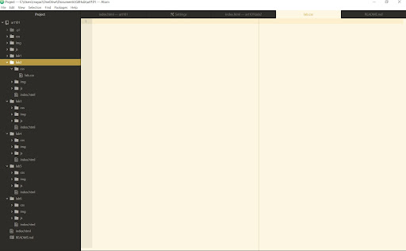

The goal of this lab was to utilize HTML file structures specialized for ART101, so that Atom could be organized through these folders for future projects.
Although Maya and I have the ability to work in-person together, it was still a bit difficult collaborating on our files. We had some technical difficulties with Teletype that made working on the same file slightly challenging, but we were ultimately able to get everything done in spite of those difficulties. We also hit some minor roadbumps due to small typos in our code, but that was easily resolved once they were identified and fixed.
This lab allowed us to develop a personalized homepage as a base for past and future assignments for the class.
This was the file structure we used for Atom
We each created personal homepages, here is the result of my html.

This is the view from in my browser.